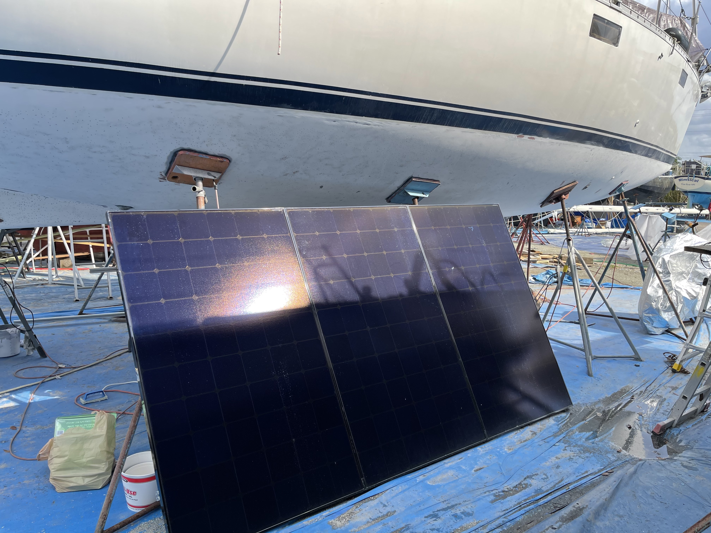

This is a story about how I came to live on a solar powered boat. I had a dream of powering my life with solar power for over a decade. I started with my home in Sun Prairie, WI. The plan was to add a large array to the property and sell the power back to the grid, but 'smart' net metering made it so that there was no longer a way to run the electric meter backwards. It took away my incentive to overbuild, but that didn't stop me from wanting to power my life with solar. I knew I'd need a battery to store the excess power rather than pushing it out onto the grid.
